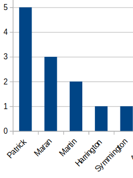

WANNABE GMs signing up for Pay League 2022-23 Duggan - PAID Egan - PAID Harrington - PAID Maran - PAID
top ranking GM within wagers wins the whole pot *if tied, random public draw for which category will be the deciding factor will be held
All GMs participating in the wagering will be added to the 2022-23 draft lottery for draft positioning. Those not participating will keep their end of year rank Current GM Wager Monies: $80
Time in 1st (Best effort monitoring!) - as of Oct 31,2022

Super keepers unable to be kept for 2023-24:
Connor McDavid
Andrei Vasilevskiy
Victor Hedman
NHL Dates:
Oct 07 – NHL Regular Season Begins in Europe
Oct 11 – NHL Regular Season Begins in North America
-----------------
Jan 02 – Winter Classic (Fenway - Pitts vs Bos)
Feb 04 – All-Star Game
Feb 18 – Stadium Series (Raleigh - Wash vs Car)
Mar xx – NHL Trade Deadline
Apr xx – Start Of Playoffs
Paper Tiger (Best drafted team as per yahoo in draft room): Jadrian
The Big Lebowski (First to pay GM wager): Egan
T-Rex Arms (Last to pay GM wager):
First Snipe of the Fantasy Year: Symmington (Niederreiter)
First Apple of the Fantasy Year: Anthony (Granlund) + Egan (Forberg - 2nd assist)
First GWG of the Fantasy Year: Symmington (Niederreiter)
First PPP of the Fantasy Year: Jadrian (Stamkos) + Assists: Harrington (Kucherov) & Egan (Point)
First SHP of the Fantasy Year: Jadrian (Zibanejad) + Assists: Martin (Trouba) & Symmington (Miller)
First W of the Fantasy Year: Harrington (Saros)
First SO of the Fantasy Year: Harrington (Thompson)
First Missed SO of the Fantasy year: Patrick (Reimer)
First Goalie Pulled of the Fantasy Year: Symmington (Fleury)
First Major Penalty of the Fantasy Year: Harrington (Borowiecki)
First Hat Trick of the Fantasy Year: Mulvihill (McDavid)
First GWG/SHG of the Fantasy Year:
First Double SO Night of the Fantasy Year:
All The Hops (Most Fantasy Points Gained In a Day): Mulvihill (59) *first week -- after 2 weeks:
Best Team Name:
Best Avatar:
Most trades:
Worst trade:
The What Have I Done!? (GM with the Worst drop to FA):
The Infirmary (GM most hit by injuries):
Worst 3rd Round Draft Pick:
Best 13th Round Draft Pick: **Suggestions welcome for additional Awards!
Hall of Champions
Season 1 - 2003 Puck it (Symmington)
Season 2 - 2005 Corporate Clergyman (Harrington)
Season 3 - 2006 IC DeadPeople (Jaye)
Season 4 - 2007 twofor2 (Mulvihill)
Season 5 - 2008 Corporate Dominance (Harrington)
Season 6 - 2009 Corporate Victory!!! (Harrington)
Season 7 - 2010 Corporate Dynasty!! (Harrington)
Season 8 - 2011 Nutstrikers (Duggan)
Season 9 - 2012 PuckinDown (Symmington)
Season 10 - 2013 Clergy & Son (Harrington)
Season 11 - 2014 Empire of the Clergy (Harrington)
Season 12 - 2015 Pink Taco Shogun (Martel)
Season 13 - 2016 Connor McCorporate (Harrington)
Season 14 - 2017 El Championacito (Martel)
Season 15 - 2018 Corpra Kai !!!!!!!! (Harrington)
Season 16 - 2019 The Sheshter King (Harrington)
Season 17 - 2020 Doughty Deeds (Maran)
Season 18 - 2021 Doughty Deeds (Maran)
Season 19 - TBD
**This is website 1.0, will look to put a bit of time at some point to move it to 2.0 and a few other things ... and stuff
 The Big Lebowski (First to pay GM wager): Egan
The Big Lebowski (First to pay GM wager): Egan